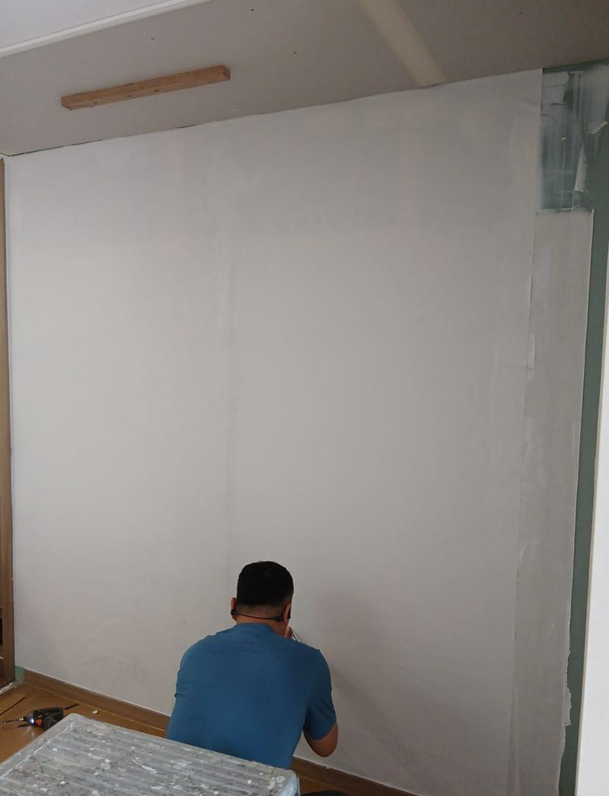
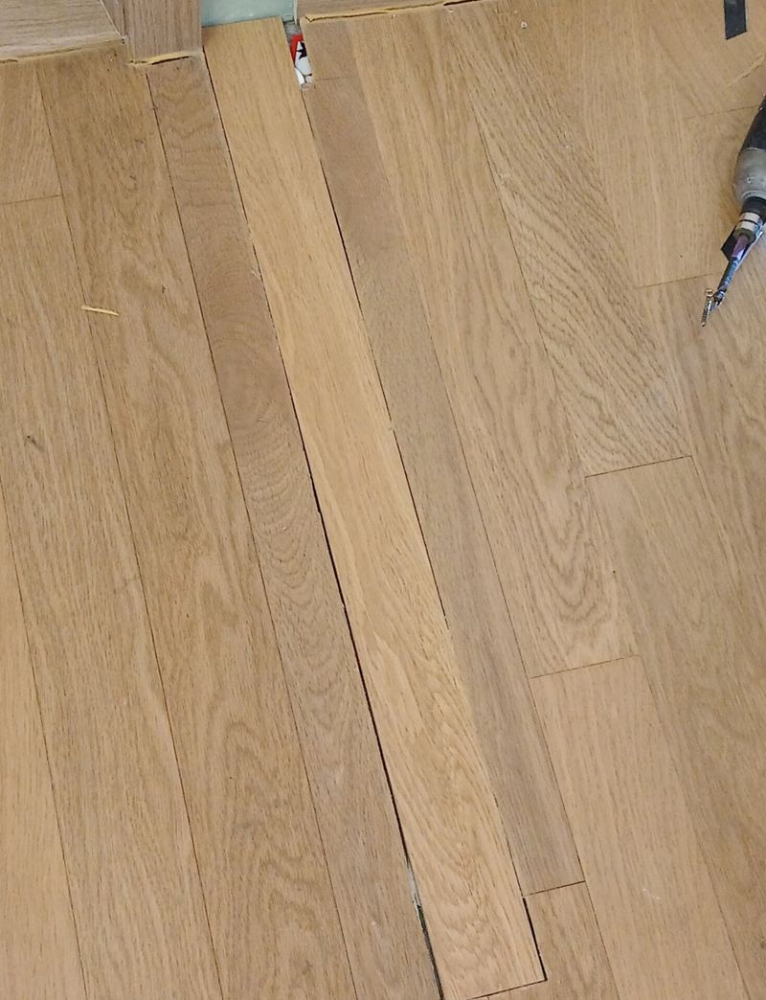
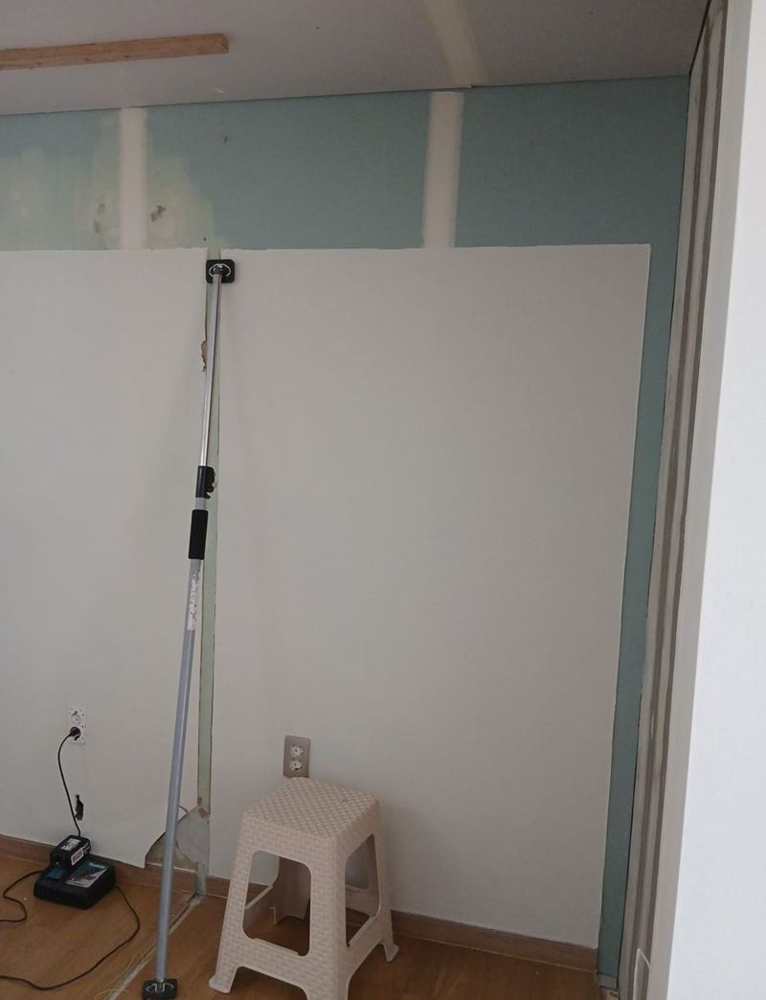
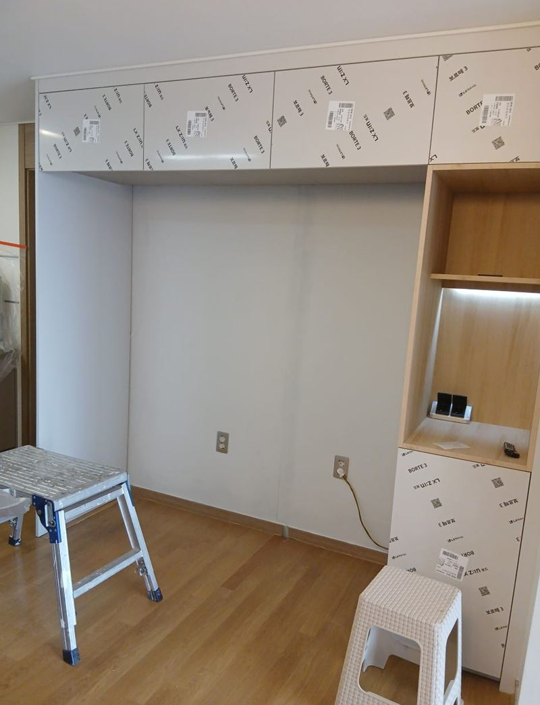
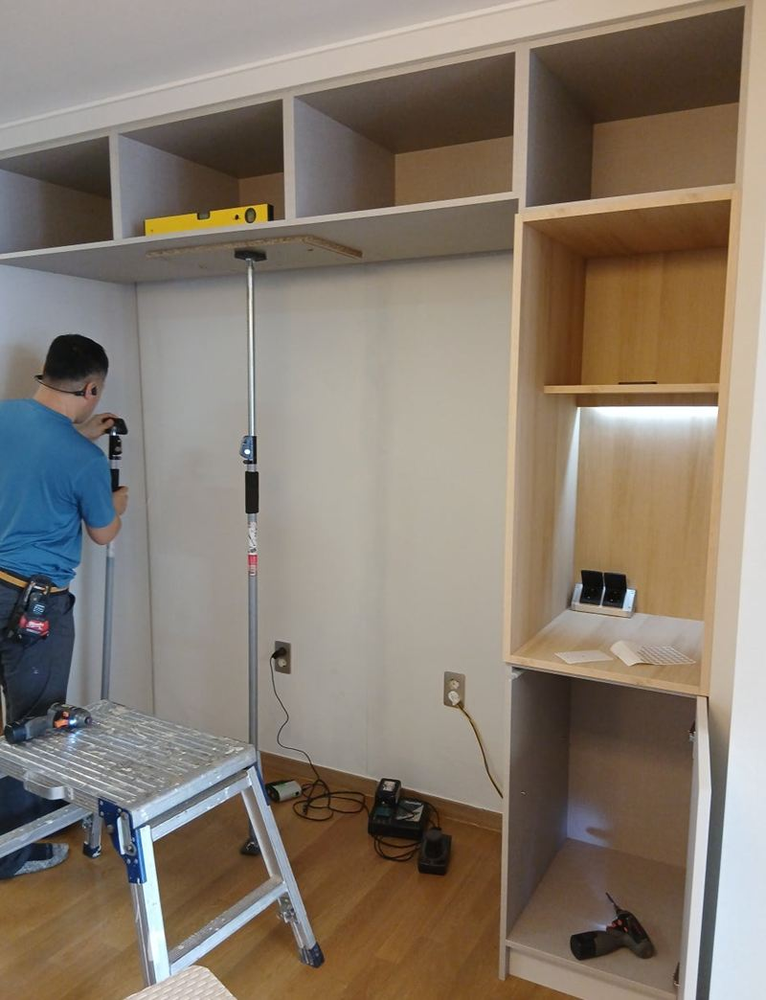
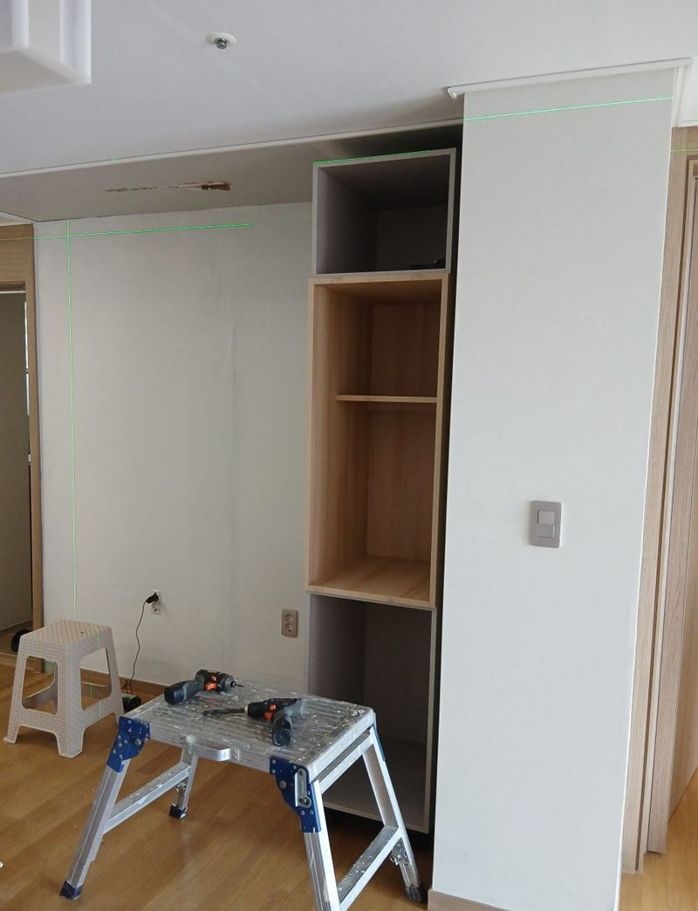

용인 기흥 냉장고장 칸막이 철거로 수납 늘리기
← 밀어서 전후 비교 →
이사 들어가는 집이었는데, 냉장고장 가운데 칸막이 때문에 쓰려는 냉장고가 맞지 않고 주방도 답답해 보였어요. 고객님은 그 자리를 커피머신과 토스터를 올려 두는 홈바로 쓰고 싶어 하셨어요. 칸막이를 걷어 내고, 드러난 벽과 바닥까지 정리한 뒤 홈바 수납장을 새로 넣었어요.
| 현장 | 용인 기흥 동백동 아파트, 이사 입주 전 |
|---|---|
| 바람 | 냉장고 자리를 홈바로 쓰기 |
| 한 일 | 배선 확인·차단 → 칸막이 절단 → 벽·마루 복원 → 홈바 설치 → 콘센트 추가 |
| 마감 | 실리콘과 도장 보수로 철거 흔적 정리 |
철거 전에 벽 속부터 확인
냉장고장 칸막이는 위아래 장 사이에 벽처럼 들어가 있어서, 무작정 뜯으면 옆 벽이 같이 상해요. 보강목이 어떻게 들어가 있는지, 냉장고 전기 배선과 콘센트가 어디를 지나는지 먼저 봤어요. 콘센트 위치를 옮겨야 해서 차단기를 내리고 절연 처리를 한 다음 작업했어요.


칸막이를 걷은 뒤 남는 흔적 정리
전용 절단기와 먼지 포집기를 같이 써서 먼지가 덜 날리게 칸막이를 잘라 냈어요. 걷어 내자 벽은 콘크리트가 그대로 드러났고, 바닥은 마루 높이가 달라 턱이 져 있었어요. 이 흔적을 그냥 덮지 않고 벽 마감과 마루 보수까지 해서 원래부터 열린 공간이었던 것처럼 맞췄어요.


홈바 수납장 넣기
우드톤 상판과 매트한 흰 문짝으로 만든 홈바를 넣었어요. 상부장은 천장 몰딩과 부딪히지 않게 수평을 맞춰 달고, 하부장 뒤에는 보강목을 대서 무게를 고르게 나눴어요. 커피머신과 토스터를 바로 쓸 수 있게 하단에 콘센트도 하나 더 뺐어요.


마지막으로 이음부를 실리콘으로 마감하고, 손이 닿는 벽 부분은 도장을 보수해 철거 흔적이 보이지 않게 정리했어요.
냉장고장 칸막이, 이럴 때 철거를 고민하세요
- 새 냉장고가 칸막이에 걸려요양문형·4도어로 바꾸며 폭이 넓어졌다면 칸막이만 빼도 들어가는 경우가 있어요.
- 냉장고장이 주방을 답답하게 막아요칸막이를 걷으면 시선이 트여 주방이 넓어 보여요.
- 그 자리를 다른 용도로 쓰고 싶어요홈카페, 홈바, 팬트리 수납장으로 바꾸는 분들이 많아요.
- 이사 전에 손보고 싶어요짐이 들어오기 전이면 먼지 관리와 마감이 훨씬 수월해요.
칸막이 철거 질문
칸막이가 건물 벽은 아닌가요?
대부분 가구용 칸막이지만, 일부는 경량 벽체예요. 철거 전에 구조를 확인하고 진행해요.
콘센트를 옮겨야 하면 전기 공사도 되나요?
이 현장처럼 냉장고장 안 콘센트 위치를 옮기는 정도는 함께 정리해요.
벽지 색이 달라 티가 나지 않을까요?
드러난 면만 도배하면 차이가 날 수 있어요. 남은 벽지가 있으면 같이 쓰고, 없으면 비슷한 색으로 맞춰요.
홈바 수납장 크기는 어떻게 정하나요?
올릴 가전과 수납할 물건을 알려주시면 상판 높이와 칸 구성을 같이 정해요.
칸막이 철거 비용은 무엇으로 달라지나요?
칸막이 구조, 배선 이동 여부, 철거 뒤 벽·바닥 마감 범위, 새로 넣을 장의 크기에 따라 달라져요.
홈바 대신 냉장고를 다시 넣을 수도 있나요?
칸막이만 빼고 더 넓은 냉장고 자리로 쓰는 경우도 많아요. 넣을 냉장고 치수를 알려주세요.
칸막이 뜯을 때 집 안이 지저분해지나요?
자르는 작업이라 먼지가 생겨서 먼지 포집기를 함께 쓰고, 주변을 덮은 뒤 작업해요.
상부장만 남기고 하부만 바꿀 수 있나요?
가능해요. 상부장은 그대로 두고 아래만 새 수납장으로 바꾸는 방법도 있어요.
철거한 칸막이 자재는 어떻게 하나요?
잘라 낸 칸막이와 부속은 현장에서 정리해요. 처리 방법은 상담할 때 함께 정하고, 재활용할 수 있는 판재는 따로 남겨 드릴 수도 있어요.
아파트 관리사무소 신고가 필요한가요?
절단 소음이 나는 작업이라 단지마다 신고나 작업 시간 규정이 있을 수 있어요. 미리 확인해 두시면 일정 잡기가 편해요.
다른 냉장고장 현장
냉장고장 전체 사진과 새 냉장고 모델명을 알려주세요.
전화 상담 010-4517-9872